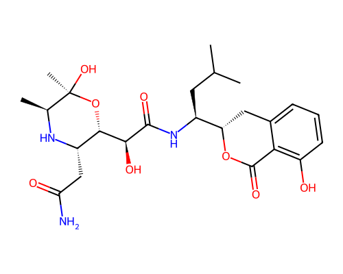
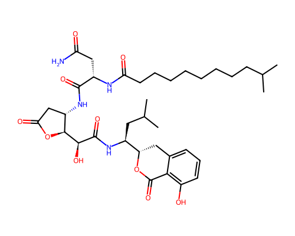

Bacillus subtilis · B1779
- Collection location
- Red Sea marine sediment
- Ocean / sea
- Red Sea
- Sampling depth
- 1000 m
- Substrate
- marine sediment
DOI 10.3390/md10020319 ↗ · PubMed 22412803 ↗
PDF pp1,5-6; SI p4 Table 3
Recorded organism, strain, collection context and compound-linked source evidence.
A source profile groups recorded name variants. Primary-source review, strain identification and sequence verification are separate evidence decisions.
Compound activities are not automatically attributable to this strain, sample or source publication.
| Structure | Compound | Formula | MW (g/mol) | Reported source depth | Classification | Activity records | Admitted evidence rows |
|---|---|---|---|---|---|---|---|
 Structure image unavailable Structure image unavailable | AI-77-FConnections → | C20H23NO7 | 389.404 g/mol | 1000 m | Polyketide-Peptide | 5 | 5 |
 Structure image unavailable Structure image unavailable | Amicoumacin AConnections → | C20H29N3O7 | 423.466 g/mol | 1000 m | Polyketide-Peptide | 4 | 4 |
 Structure image unavailable Structure image unavailable | Amicoumacin BConnections → | C20H28N2O8 | 424.45 g/mol | 1000 m | Polyketide-Peptide | 5 | 5 |
 Structure image unavailable | Bacilosarcin BConnections → | C24H35N3O8 | 493.557 g/mol | 1000 m | Polyketide-Peptide | 4 | 4 |
 Structure image unavailable Structure image unavailable | Bacilosarcin CConnections → | C24H34N2O9 | 494.541 g/mol | 1000 m | Polyketide-Peptide | 4 | 4 |
 Structure image unavailable | Lipoamicoumacin AConnections → | C36H54N4O10 | 702.846 g/mol | 1000 m | Polyketide-Peptide | 4 | 4 |
 Structure image unavailable Structure image unavailable | Lipoamicoumacin BConnections → | C37H56N4O10 | 716.873 g/mol | 1000 m | Polyketide-Peptide | 4 | 4 |
 Structure image unavailable Structure image unavailable | Lipoamicoumacin CConnections → | C37H56N4O10 | 716.873 g/mol | 1000 m | Polyketide-Peptide | 4 | 4 |
 Structure image unavailable Structure image unavailable | Lipoamicoumacin DConnections → | C38H58N4O10 | 730.9 g/mol | 1000 m | Polyketide-Peptide | 4 | 4 |
Up to two results per compound are shown. Open the compound record for all results, conditions and restrictions.
Shared cited references are prioritized where available. A shared reference does not establish a strain-specific assay or the same experimental sample.
| Product | Recorded results | Result evidence |
|---|---|---|
| AI-77-F | Bacillus subtilis MIC > 100 μM Evidence detailsPrimary result checkedShared cited reference; experimental attribution unconfirmed Staphylococcus aureus MIC > 100 μM Evidence detailsPrimary result checkedShared cited reference; experimental attribution unconfirmed | |
| Amicoumacin A | Bacillus subtilis MIC = 18.87 μM Evidence detailsPrimary result checkedShared cited reference; experimental attribution unconfirmed Staphylococcus aureus MIC = 18.87 μM Evidence detailsPrimary result checkedShared cited reference; experimental attribution unconfirmed | |
| Amicoumacin B | Bacillus subtilis MIC > 100 μM Evidence detailsPrimary result checkedShared cited reference; experimental attribution unconfirmed Staphylococcus aureus MIC > 100 μM Evidence detailsPrimary result checkedShared cited reference; experimental attribution unconfirmed | |
| Bacilosarcin B | Bacillus subtilis MIC > 100 μM Evidence detailsPrimary result checkedShared cited reference; experimental attribution unconfirmed Staphylococcus aureus MIC = 4.05 μM Evidence detailsPrimary result checkedShared cited reference; experimental attribution unconfirmed | |
| Bacilosarcin C | Bacillus subtilis MIC > 100 μM Evidence detailsPrimary result checkedShared cited reference; experimental attribution unconfirmed Staphylococcus aureus MIC > 100 μM Evidence detailsPrimary result checkedShared cited reference; experimental attribution unconfirmed | |
| Lipoamicoumacin A | Bacillus subtilis MIC > 100 μM Evidence detailsPrimary result checkedShared cited reference; experimental attribution unconfirmed Staphylococcus aureus MIC > 100 μM Evidence detailsPrimary result checkedShared cited reference; experimental attribution unconfirmed | |
| Lipoamicoumacin B | Bacillus subtilis MIC > 100 μM Evidence detailsPrimary result checkedShared cited reference; experimental attribution unconfirmed Staphylococcus aureus MIC > 100 μM Evidence detailsPrimary result checkedShared cited reference; experimental attribution unconfirmed | |
| Lipoamicoumacin C | Bacillus subtilis MIC > 100 μM Evidence detailsPrimary result checkedShared cited reference; experimental attribution unconfirmed Staphylococcus aureus MIC > 100 μM Evidence detailsPrimary result checkedShared cited reference; experimental attribution unconfirmed | |
| Lipoamicoumacin D | Bacillus subtilis MIC > 100 μM Evidence detailsPrimary result checkedShared cited reference; experimental attribution unconfirmed Staphylococcus aureus MIC > 100 μM Evidence detailsPrimary result checkedShared cited reference; experimental attribution unconfirmed |
Repeated source records are grouped with their associated compounds.
Associated compounds: Lipoamicoumacin A, Lipoamicoumacin B, Lipoamicoumacin C, Lipoamicoumacin D, Bacilosarcin C, Bacilosarcin B, Amicoumacin A, AI-77-F, Amicoumacin B